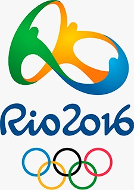
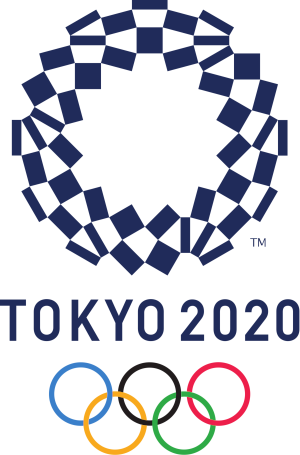

2008
Jogos Olímpicos de 2008 oficialmente conhecidos como os Jogos da XXIX Olimpíada, foram um evento multiesportivo realizado em Pequim, na República Popular da China, de 8 a 24 de agosto de 2008. Pela primeira vez, a China ficou em primeiro lugar no quadro geral. O Brasil voltou dessa edição dos Jogos com 17 medalhas (três de ouro, quatro de prata e dez de bronze).
2012
Jogos Olímpicos de 2012, oficialmente conhecidos como os Jogos da XXX Olimpíada, mais comumente Londres 2012 foram os Jogos Olímpicos realizados na cidade de Londres, de 27 de julho a 12 de agosto de 2012. Em Londres, o Time Brasil conquistou um total de 17 medalhas e terminou na 14ª colocação, empatado com Hungria e Espanha. Até então o maior número de pódios em uma mesma edição dos Jogos. Foram 3 de ouro, 5 de prata e 9 de bronze. A marca anterior, com 16 medalhas, havia sido obtida em Pequim 2008. O país foi representado por 259 atletas em 32 modalidades.
2016
Jogos Olímpicos de 2016 conhecidos oficialmente como os Jogos da XXXI Olimpíada, mais comumente Rio 2016, foi um evento multiesportivo realizado no segundo semestre de 2016, na cidade do Rio de Janeiro, capital do estado homônimo, no Brasil. Wikipédia O desempenho dos brasileiros nesta Olimpíada foi o melhor de toda a história do Brasil nos jogos. Terminando em 13º lugar no ranking geral, o Brasil conquistou 19 medalhas na competição: sete de ouro, seis de prata e seis de bronze.
2020
conhecidos oficialmente como os Jogos da XXXII Olimpíada, mais comumente Tóquio 2020, foi um evento multiesportivo realizado durante o verão de 2021 devido à pandemia de COVID-19, na região metropolitana de Tóquio, Japão. A escolha da sede foi feita durante a 125ª Sessão do Comitê Olímpico Internacional, que aconteceu em Buenos Aires, Argentina, em 7 de setembro de 2013. A campanha brasileira na Olimpíada de Tóquio terminou com a melhor performance do país em uma edição de Jogos Olímpicos. Por diversas óticas, o resultado no Japão representou um marco, um avanço cinco anos após sediar o evento. O quadro de medalhas mostrou o Brasil em 12º lugar, melhor classificação na história. Jogos Olímpicos de Verão de 2024 Olimpíada, mais comumente Paris 2024, será um evento multiesportivo realizado no segundo semestre de 2024, na cidade de Paris, capital da França. Será a terceira vez na história em que a cidade sediará sendo a primeira vez em 1900 e a segunda em 1924. No total esta será a sexta edição dos Jogos Olímpicos realizados na França.O país ainda sediou os Jogos Olímpicos de Inverno de 1924 em Chamonix,os Jogos Olímpicos de Inverno de 1968 em Grenoble e mais recentemente os Jogos Olímpicos de Inverno de 1992 na Savóia. Os Jogos de 2024, serão a primeira edição fora de um pais do Extremo Oriente em 6 anos e a primeira na União Europeia em 12 anos quando Londres sediou os Jogos Olímpicos de Verão de 2012, e seguindo os Jogos Olímpicos de Inverno de 2018 em Pyeongchang, Coreia do Sul, e posteriormente os Jogos Olímpicos de Verão de 2020, que serão realizados em Tóquio, capital do Japão e os Jogos Olímpicos de Inverno de 2022, que serão realizados em Pequim, capital da República Popular da China.